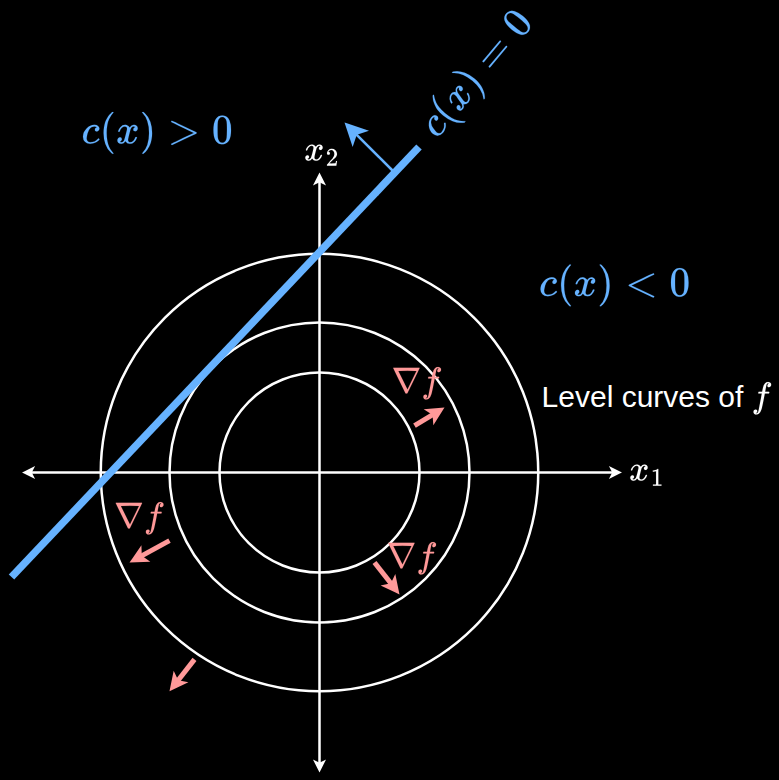

Last modified .

The circles are the level curves of the objective function to be minimised. The blue line $c(x) = 0$ is the constraint.
$$\begin{align*} f(x) &: \mathbb{R}^2 \rightarrow \mathbb{R} \\ c(x) &: \mathbb{R}^2 \rightarrow \mathbb{R} \end{align*}$$
At an optimal point, movement along the blue line shouldn't change the value of the objective function at all. This means the directional derivative of $f$ in the direction of the blue line must be zero. For the directional derivative to be zero, the gradient $\nabla f$ must be perpendicular to the direction of movement.